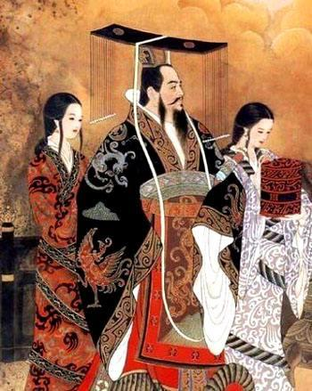

刘彻
汉武帝刘彻（前156年？—前87年3月29日），西汉第七位皇帝（含前后少帝），政治家、文学家。 [1]
汉武帝在位期间（前141年—前87年），在政治上，创设中外朝制、刺史制、 [2] 察举制，颁行推恩令，加强君主专制与中央集权。在经济上，推行平准、均输、算缗、告缗等措施，铸五铢钱，由官府垄断盐、铁、酒的经营，并抑制富商大贾的势力。文化方面，“罢黜百家，独尊儒术”，并设立太学。对外，汉武帝采扩张政策，除与匈奴长年交战外，还破闽越、南越、卫氏朝鲜、西羌、楼兰、车师、轮台、大宛，又凿空西域、开丝绸之路，并开辟西南夷。此外，还有创设年号、颁布太初历等举措。但他崇信方术、自奉奢侈，兼以穷兵黩武，引发统治危机，晚年爆发巫蛊之祸，后因对外扩张受挫而颁《轮台诏》。后元二年（公元前87年），汉武帝崩于五柞宫，享年70岁，葬于茂陵。
汉武帝的历史影响深远而复杂，评价亦存争议。死后谥号孝武皇帝，宣帝时上庙号世宗。其事迹见《史记》《汉书》，其轶事多见《汉武故事》 [3] 。